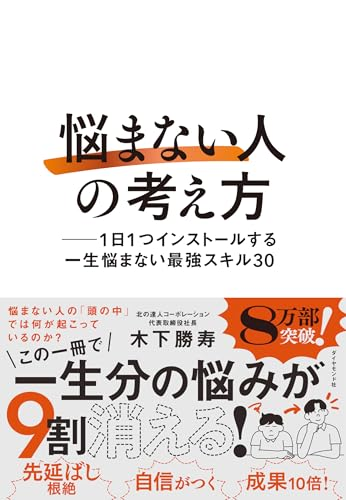

「悩まない人」
の考え方
の考え方
ちーちゃん 紹介
「悩まない人」の考え方
友人がYouTubeで勧めていたのがきっかけ。フリーランスとして日々ぽんぽん出てくる悩みに効くかもと手に取った一冊。
ちーちゃんが刺さったところ
本の中の例え話――ある社長が「1000万円の利益が見込める施策」を検討中、法務から訴訟リスクを理由に待ったがかかる。そこで社長は「損害賠償額は最大いくら？」「訴訟になる確率は？」「勝てる確率は？」と数字で刻んでいく。計算していくと施策の期待値はプラス800万円。だから実行しない理由がない、という思考の流れ。著者本人はこの考え方でもう何十年も悩んでいないそう。「ポジティブシンキングの人ほど心が折れやすい、常にリスクを想定しておく人のほうが強い」という一文にも、ちーちゃんは唸っていた。
ちりめん♂さん「この人は事業向きではないですね🤣」
感情派のちーちゃんが、いちばん遠い思考回路を仕入れた夜。
数日前も「地震が来たらどうしよう」と言っては皆に笑われていたばかり。「自分と正反対の思考回路を仕入れるのが面白い」——事業の壁打ち相手も、あえて自分とは違う考え方をする人を選んでいるそうだ。